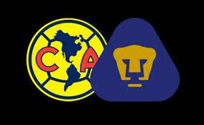
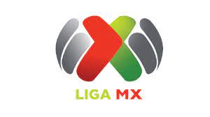
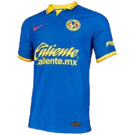
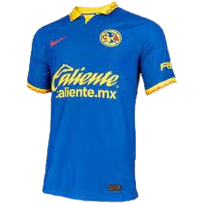

Clásico Nacional
Clásico Capitalino

Clásico Joven

Zague
Liga MX

Trofeo

Director Técnico

Concachampions
El Club América es uno de los equipos de fútbol más destacados e históricos de México. Su historia se remonta a 1916, cuando fue fundado en la Ciudad de México por un grupo de jóvenes entusiastas del deporte. Originalmente, se llamaba "México FC", pero en 1927 cambió su nombre a Club América, en honor al continente. El club ha sido cuna y hogar de numerosas figuras del fútbol tanto mexicano como extranjero, tales como Cuauhtémoc Blanco, Carlos Reinoso, Hugo Sánchez, entre otros. Su rivalidad con el Club Deportivo Guadalajara, conocido como las Chivas, es una de las más acérrimas y emblemáticas en el fútbol mexicano, dando lugar a enfrentamientos llenos de pasión y rivalidad deportiva. El Estadio Azteca, su emblemático hogar, ha sido testigo de innumerables triunfos y momentos históricos para el club y para el fútbol en general, siendo escenario de finales de Copa del Mundo y de encuentros memorables a nivel de clubes.
Local
Visitante
Tercera
 


El Estadio Azteca, ubicado en la Ciudad de México, es un ícono del fútbol mexicano y mundial. Con capacidad para más de 83,264 espectadores, este coloso deportivo ha sido testigo de innumerables momentos históricos en el fútbol, desde la Copa del Mundo de 1970 hasta partidos épicos de clubes como el Club América, que lo considera su hogar y donde despliega su poderío futbolístico ante su fervorosa afición.

América se acostumbró a ganar campeonatos en sus 107 años de historia.
Hasta ahora, las ‘Águilas’ acumulan 41 títulos en sus vitrinas y se
afianzan como el equipo más ganador del futbol mexicano.
El América se fundó en 1916 y desde entonces comenzaron una historia de éxitos.
En la época amateur del futbol mexicano, las ‘Águilas’ consiguieron 6 títulos.
En el Campeonato de Primera Fuerza fueron monarcas en las ediciones de 1924-25, 1925-26, 1926-27 y 1927-28;
también consiguieron la Copa México 1937-38.